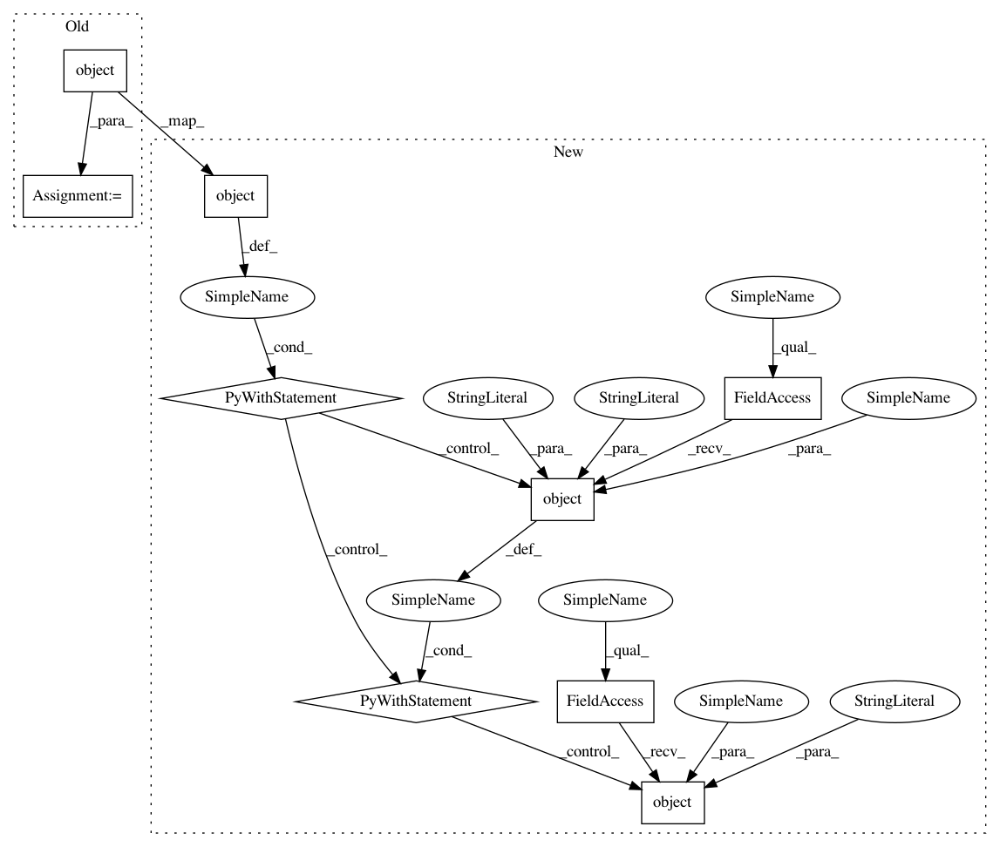

b9224ee28f8d1fe669ae9c09738257bcaf0efd19,tests/tracking/test_fluent.py,,test_start_run_defaults,#Any#,154
Before Change
"mlflow.tracking.context._get_source_version", return_value=mock_source_version
)
create_run_patch = mock.patch.object(MlflowClient, "create_run")
expected_tags = {
mlflow_tags.MLFLOW_SOURCE_NAME: mock_source_name,
mlflow_tags.MLFLOW_SOURCE_TYPE: mock_source_type,
After Change
}
with experiment_id_patch, databricks_notebook_patch, source_name_patch, source_type_patch, \
source_version_patch, mock.patch.object(MlflowClient, "create_run"), \
mock.patch.object(SourceType, "to_string", return_value="some source"), \
mock.patch.object(SourceType, "from_string", return_value=mock_source_type):
active_run = start_run()
MlflowClient.create_run.assert_called_once_with(
experiment_id=mock_experiment_id,
In pattern: SUPERPATTERN
Frequency: 3
Non-data size: 9
Instances
Project Name: mlflow/mlflow
Commit Name: b9224ee28f8d1fe669ae9c09738257bcaf0efd19
Time: 2019-03-11
Author: mani@databricks.com
File Name: tests/tracking/test_fluent.py
Class Name:
Method Name: test_start_run_defaults
Project Name: mlflow/mlflow
Commit Name: b9224ee28f8d1fe669ae9c09738257bcaf0efd19
Time: 2019-03-11
Author: mani@databricks.com
File Name: tests/tracking/test_fluent.py
Class Name:
Method Name: test_start_run_defaults
Project Name: mlflow/mlflow
Commit Name: b9224ee28f8d1fe669ae9c09738257bcaf0efd19
Time: 2019-03-11
Author: mani@databricks.com
File Name: tests/tracking/test_fluent.py
Class Name:
Method Name: test_start_run_overrides_databricks_notebook
Project Name: mlflow/mlflow
Commit Name: b9224ee28f8d1fe669ae9c09738257bcaf0efd19
Time: 2019-03-11
Author: mani@databricks.com
File Name: tests/tracking/test_fluent.py
Class Name:
Method Name: test_start_run_with_parent